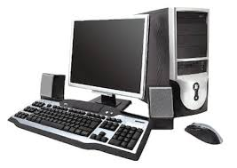

Cómo trabajan juntos los componentes del hardware

Una computadora funciona mediante la interacción de sus componentes principales. El procesador (CPU) actúa como el “cerebro”, ejecutando instrucciones y realizando cálculos. La memoria RAM almacena temporalmente los datos necesarios para que los programas se ejecuten de manera rápida. El almacenamiento guarda la información de forma permanente, mientras que la tarjeta madre conecta todos los componentes permitiendo la comunicación entre ellos. Finalmente, dispositivos como la tarjeta gráfica procesan imágenes para mostrarlas en pantalla.